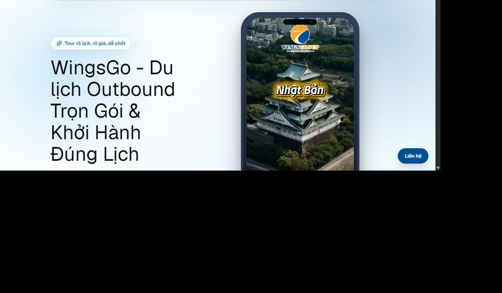
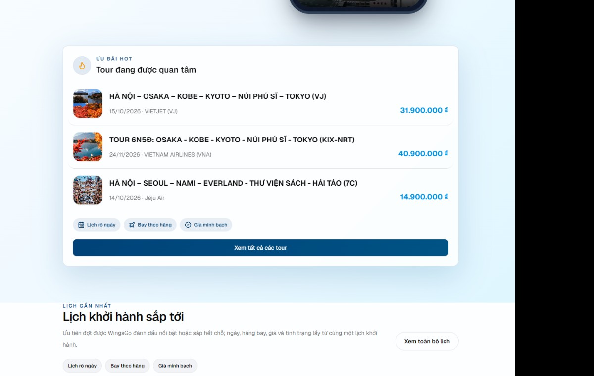

Tài liệu chuẩn hóa quy trình biên tập, tạo Trang, tạo Tour, cấu hình Tour Hot & Tour Nổi bật (Featured), và gắn nhãn khuyến mại (Promo Label) theo đúng phân quyền (Role) trên hệ thống CMS WingsTravel Group.
Hệ thống áp dụng mô hình phân quyền ma trận: Quyền hạn hành động kết hợp với Phạm vi Site (Site Scope).
Chịu trách nhiệm trực tiếp về chất lượng nội dung, hình ảnh, thông tin giá và lịch trình trong phạm vi site được giao.
/tour để chọn và xếp thứ tự các Tour nổi bật.Promo label (Hot, Giảm giá...) và đợt khởi hành.Toàn quyền vận hành nội dung, xuất bản và đảm bảo tính nhất quán của một website cụ thể (như WingsGo hoặc WingsSide).
Quản trị toàn bộ các site trong tập đoàn WingsTravel, người dùng, quyền hạn và kết nối kỹ thuật.
Hai khu vực thương mại quan trọng nhất trên trang chủ `https://wingsgo.vn` được điều phối hoàn toàn từ CMS.

Khối "Ưu đãi hot / Tour đang được quan tâm" đặt ngay dưới Hero Banner. Hiển thị 3 tour đầu tiên trong danh sách Tour nổi bật. Các đợt có gắn Promo label sẽ xuất hiện thêm Badge viền cam nổi bật (Ví dụ: Hot, Mùa lá đỏ).

Khối "🔥 Tour đang được quan tâm nhất" ở giữa trang chủ. Hiển thị card ảnh lớn, lộ trình chi tiết, giá khởi điểm và đợt bay gần nhất cho toàn bộ danh sách 4 - 6 tour được Editor ghim.
WingsGo tour catalog ➔ trường Featured Tours (Tour nổi bật) của Trang có đường dẫn /tour. Editor chỉ cần sắp xếp thứ tự một lần là cả hai khối sẽ tự động cập nhật!
Hướng dẫn chi tiết quản trị qua Chức năng độc lập "Bộ tour nổi bật" trên Main Menu Sidebar và gán linh hoạt vào các Landing Page.
Đây là phương thức nhanh và trực quan nhất để quản lý các tour hiển thị trên Trang chủ và trang Catalog toàn site:
Nếu bạn tạo một Landing Page khuyến mại hoặc chiến dịch sự kiện và muốn hiển thị một nhóm tour đặc thù riêng cho trang đó:
Chi tiết tour / ID: 208).WingsGo tour catalog (Tab thứ 5).[+] nằm ngay cạnh ô Bộ tour nổi bật áp dụng. Cửa sổ popup sẽ mở ra cho phép bạn đặt tên, chọn tour, kéo thả mô phỏng Live Simulator. Bấm Lưu, bộ tour mới sẽ tự động được gán ngay vào trang mà không cần rời trang hay chuyển menu!
✕ để xóa trống ô Bộ tour nổi bật áp dụng. Sau đó kéo thả chọn tour ở khung Tour nổi bật (Legacy) ngay bên dưới.
1. Curation riêng của Trang ➔ 2. Curation mặc định của Site ➔ 3. Danh sách thủ công Legacy ➔ 4. Fallback tự động nạp tour active. Đảm bảo website không bao giờ bị trống dữ liệu.
Dù thao tác từ Menu "Bộ tour nổi bật" hay từ Tab "WingsGo tour catalog", Editor đều được cung cấp Interactive Curation Console & Live Simulator 1:1 cao cấp:
⚠️ Chưa có nhãn ưu đãi để nhắc nhở editor.
⠿ ở đầu mỗi thẻ để kéo thả tự do bằng @dnd-kit, hoặc dùng 2 nút mũi tên ▲ / ▼ để di chuyển thứ tự nhanh chóng. Bấm ✕ để gỡ tour khỏi danh sách nổi bật.💻 Desktop, 📋 Tablet (768px) và 📱 Mobile để kiểm tra trước bố cục trên mọi thiết bị.⛔ Hết lịch bay tương lai).| Thứ tự (Order) | Sản phẩm Tour (Tour Product) | Vị trí hiển thị trên Web | Đặc điểm nổi bật |
|---|---|---|---|
| #1 (Đầu tiên) | Hà Nội – Osaka – Kobe – Kyoto – Núi Phú Sĩ – Tokyo (VJ) |
Hero Khối 1 + Lưới Grid | Badge "Hot" · Bay Vietjet · 6N5Đ |
| #2 (Thứ hai) | Tour 6N5Đ: Osaka - Kobe - Kyoto - Núi Phú Sĩ - Tokyo (KIX-NRT) |
Hero Khối 1 + Lưới Grid | Bay Vietnam Airlines · Lịch mùa thu |
| #3 (Thứ ba) | Hà Nội – Seoul – Nami – Everland - Thư Viện Sách - Hái Táo (7C) |
Hero Khối 1 + Lưới Grid | Tuyến Hàn Quốc mùa hoa · Giá tốt |
| #4 (Thứ tư) | Thượng Hải – Ô Trấn – Hàng Châu - Ngủ 1 Đêm Ô Trấn (CA) |
Lưới Grid | Tuyến Trung Quốc cổ trấn nổi tiếng |
Badge màu cam nổi bật trên card được sinh ra từ trường `Promo label` thuộc đợt khởi hành của tour.
Trên menu bên trái CMS, tìm đến mục Tour Departures (Đợt khởi hành) (hoặc nhấp trực tiếp từ danh sách departures bên trong Tour Product).
Mở đợt khởi hành của tour bạn muốn gắn nhãn và điền các trường thương mại:
Hot, Giảm 2 triệu, Mùa lá đỏ, Bay VNA, Tặng vé show).Mở bán (Open) hoặc Sắp hết chỗ (Limited).Promo label nên ngắn gọn dưới 15 ký tự để đảm bảo hiển thị đẹp mắt, không bị rớt dòng trên các thiết bị di động.
Hướng dẫn chuẩn để triển khai một Landing Page hoặc Sản Phẩm Tour hoàn chỉnh trên CMS.
Sử dụng tính năng Tạo trang nhanh trên Console vận hành CMS:
WingsGo (hoặc site cần tạo).Các bước tạo một sản phẩm tour mới đầy đủ dữ liệu thương mại:
Editor cần kiểm tra các tiêu chí sau trước khi chuyển Site Manager duyệt:
Cơ chế an toàn 4 bước đảm bảo không xảy ra sai sót nội dung trên Production.